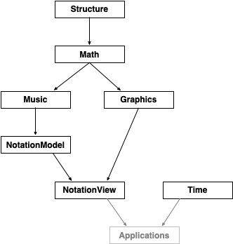

View on GitHub
View on GitHub
 dn-m
dn-m
dn-m docs
Welcome to the dn-m (dynamic notation for music) project. Here you will find documentation generated directly from the source code.
Packages
The dn-m project currently consists of seven packages (each containing one or more modules):
The packages compose with and build upon each other:

Development
The codebase for the dn-m project is written in the Swift language, and requires Swift version 4.2.
Installation
The packages within the dn-m project are managed by the Swift Package Manager.
You can clone any of the repositories from the command line. For example, to work on the Music package, you can do the following:
Bash
git clone https://github.com/dn-m/Music && cd Music
For fun, give things a test:
Bash
swift test
This will update and build all of the dependencies (e.g., the Music package depends on the Math and the Structure packages), and then run the unit tests.